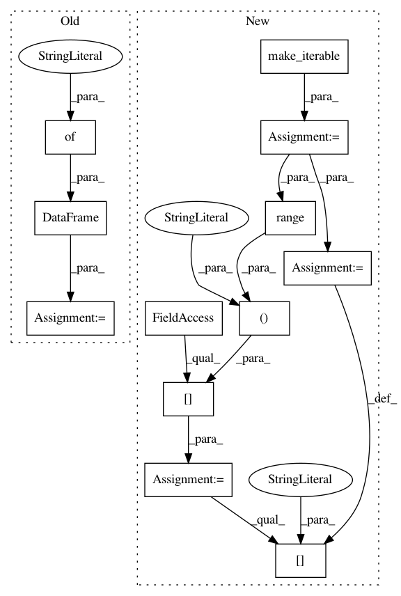

f41ef99d652c20007e301998603d28de0ac01cdd,ggplot/stats/stat_abline.py,stat_abline,_calculate,#stat_abline#Any#Any#,18
Before Change
raise GgplotError(
"Specified {} slopes but {} intercepts".format(n, _n))
new_data = pd.DataFrame({"slope": slope, "intercept": intercept})
return new_data
After Change
raise GgplotError(*err.args)
slope = make_iterable(slope)
intercept = make_iterable(intercept)
n, _n = len(slope), len(intercept)
if n != _n:
raise GgplotError(
"Specified {} slopes but {} intercepts".format(n, _n))
data = data.iloc[range(len(intercept)), :]
data["intercept"] = intercept
data["slope"] = slope
return data
In pattern: SUPERPATTERN
Frequency: 3
Non-data size: 12
Instances
Project Name: has2k1/plotnine
Commit Name: f41ef99d652c20007e301998603d28de0ac01cdd
Time: 2015-04-20
Author: has2k1@gmail.com
File Name: ggplot/stats/stat_abline.py
Class Name: stat_abline
Method Name: _calculate
Project Name: has2k1/plotnine
Commit Name: f41ef99d652c20007e301998603d28de0ac01cdd
Time: 2015-04-20
Author: has2k1@gmail.com
File Name: ggplot/stats/stat_hline.py
Class Name: stat_hline
Method Name: _calculate
Project Name: has2k1/plotnine
Commit Name: f41ef99d652c20007e301998603d28de0ac01cdd
Time: 2015-04-20
Author: has2k1@gmail.com
File Name: ggplot/stats/stat_vline.py
Class Name: stat_vline
Method Name: _calculate